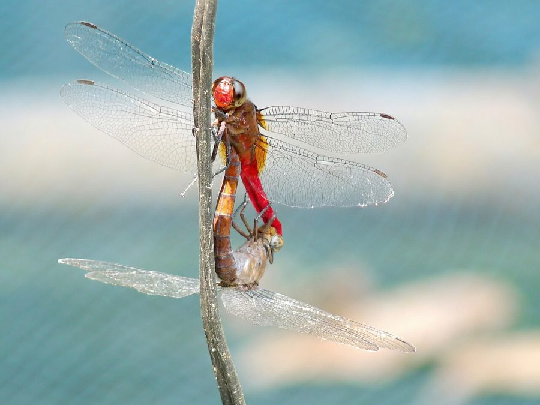

ब्राउन-बैक्ड रेड मार्श हॉक व्याध पतंगBrown-backed Red Marsh Hawk
Orthetrum chrysis · Libellulidae · INS-0209

- Scientific name वैज्ञानिक नाम
- Orthetrum chrysis (Selys, 1891)
- Family कुल
- Libellulidae
- Hindi हिंदी
- ब्राउन-बैक्ड रेड मार्श हॉक व्याध पतंग
- Local names स्थानीय नाम
- brown-backed red marsh hawk, brown backed red marsh hawk, marsh hawk dragonfly, lal bhuri vyadh patang
- Status here यहाँ की स्थिति
- native
- Movement आवागमन
- Resident, here all year
- Known from कहाँ दर्ज
- Others have published records from the wider Awadh–Purvanchal plain, none yet from Basti–Ayodhya अवध–पूर्वांचल से दूसरों के प्रकाशित अभिलेख, बस्ती–अयोध्या से अभी नहीं
- IUCN IUCN
- not evaluated
- Review समीक्षा
- not yet reviewed
When to look कब देखें
Present all year. साल भर मौजूद।
Uses and possibilities उपयोग और संभावनाएँ
Drawn from the documented uses in the profile below, where each is labelled traditional, current or a research lead. All uses →
Tell it apart from इनसे अलग पहचानें
ब्राउन-बैक्ड रेड मार्श हॉक व्याध पतंग / Brown-backed Red Marsh Hawk
Orthetrum chrysis (Selys, 1891) — Libellulidae
ब्राउन-बैक्ड रेड मार्श हॉक व्याध पतंग — बारहमासी नालों, दलदली तालाबों और नहरों के किनारे पाई जाने वाली एक मध्यम आकार की बहुत फुर्तीली और आक्रामक व्याध पतंग (dragonfly) है। इसके वयस्क नर का सीना गहरा लाल-भूरा होता है, जबकि इसका पेट चमकीला सिंदूरी या रक्त-लाल होता है। यह पानी के पास की झाड़ियों और पत्थरों पर बैठकर धूप सेकती है और हवा में उड़ने वाले कीड़ों पर बाज (hawk) की तरह झपटकर शिकार करती है।
Quick Identification त्वरित पहचान
| Feature | Description |
|---|---|
| Size | Medium-sized, robust dragonfly; abdomen 28–32 mm, hindwing 31–35 mm (Subramanian 2005) |
| Male Thorax | Rich dark reddish-brown or ferruginous brown, lacking blue pruinescence (Fraser 1936) |
| Male Abdomen | Brilliant blood-red or vivid scarlet throughout; slightly depressed at base (Subramanian 2005) |
| Eyes | Dark reddish-brown above, transitioning to bluish-grey and pale yellow below (Fraser 1936) |
| Wings | Completely clear, hyaline, with a tiny amber streak at the extreme base of hindwings (Subramanian 2005) |
| Pterostigma | Moderately long, reddish-brown framed in dark blackish veins (Fraser 1936) |
| Female Colour | Warm yellowish-brown thorax and ochreous abdomen marked with black lateral lines (Subramanian 2005) |
Field tip: Look along sunny margins of perennial ditches, marshy canals, and shaded streams. A robust dragonfly with a dark reddish-brown thorax contrasting sharply with a brilliant, unspotted blood-red abdomen, perching alertly on shoreline twigs or stones, is the Brown-backed Red Marsh Hawk.
हिंदी: पानी के किनारे पत्थरों पर बैठने वाली इस पतंग का सीना गहरा भूरा और पेट चमकीला खून जैसा लाल होता है। यह अन्य पतंगों से अपने दोहरे रंग के कारण आसानी से पहचानी जाती है।
Morphology आकारिकी
Measurements as given in the handbooks (Subramanian 2005; Fraser 1936):
| Measurement | Range | Source |
|---|---|---|
| Abdomen length | 28–32 mm | Subramanian (2005) |
| Hindwing length | 31–35 mm | Subramanian (2005) |
Adult description:
Orthetrum chrysis is a robustly constructed libellulid displaying distinct sexual dichromatism (Fraser 1936). In mature males, the head has a bright reddish-brown frons; the compound eyes meet broadly across the top of the head, coloured crimson-brown above and pale olivaceous below (Subramanian 2005). The synthorax is uniformly dark reddish-brown (ferruginous), clothed in fine brown hairs, and completely lacks the pale antehumeral stripes or blue pruinescence common in other members of the genus (Fraser 1936).
The male abdomen is moderately broad, depressed, and brilliant blood-red or scarlet throughout: segments 1 and 2 are slightly swollen and reddish-brown; segments 3 through 10 are uniform bright red, completely lacking black dorsal spots (Subramanian 2005). The anal appendages are small, bright red, and sharp-tipped (Fraser 1936).
Females are warm yellowish-brown or ochreous (Fraser 1936). The thorax is dull brown with subtle yellowish lateral sutures, and the abdomen is warm golden-yellow marked with a narrow black mid-dorsal carina and paired black lateral stripes running along segments 4 through 9 (Subramanian 2005). In both sexes, the wings are long, broad, and hyaline, bearing an extremely small golden-amber trace at the base of the hindwing and an elongate reddish-brown pterostigma (Fraser 1936).
Larval Stage निम्फ अवस्था
The aquatic naiad is stocky, robust, and dark mottled brown or blackish-grey, living partially buried in organic mud and silt along slow-flowing stream margins. The body is covered in fine setae that trap silt particles, providing complete visual camouflage against predatory fish.
हिंदी: नर का पेट 28 से 32 मिमी लंबा और पूरी तरह लाल होता है, जबकि सीना गहरा भूरा होता है। मादा हल्के भूरे और पीले रंग की होती है। इसका जलीय निम्फ कीचड़ में छिपा रहता है।
Behaviour & Ecology व्यवहार और पारिस्थितिकी
The Brown-backed Red Marsh Hawk is an aggressive, sun-loving territorial percher (Subramanian 2005). It prefers slow-flowing streams, perennial irrigation canals, marshy seepages, and shaded edges of oxbow lakes with emergent grasses and shrubby banks (Fraser 1936).
Adults are active throughout sunny hours (Subramanian 2005). Males select low, prominent perches—such as exposed rocks, overhanging branches, or shoreline twigs—and defend a linear territory of five to ten metres along the water margin. They make swift, darting flights to seize passing insects or chase away intruding dragonflies before wheeling back to their chosen perch (Fraser 1936). Mating takes place on the wing or perched on shoreline bushes. Oviposition is exophytic: the female flies in rapid hovering arcs over shallow water, rhythmically dipping her abdomen into the surface to wash off eggs while the male hovers nearby in territorial guard.
हिंदी: यह पतंग बहुत आक्रामक होती है और पानी के किनारे की टहनियों पर बैठकर अपने इलाके की रखवाली करती है। यह उड़ते हुए कीड़ों पर तेजी से हमला करती है और वापस उसी जगह आकर बैठती है।
Life Cycle / Phenology जीवन चक्र
Seasonal phenology in northern Indian alluvial wetlands across the agricultural year (Fraser 1936; Subramanian 2005):
| Season / Month | Stage | Field Observation |
|---|---|---|
| July–September (Kharif monsoon) | Adult emergence & breeding | Peak population; territorial males common along flowing drains (Subramanian 2005) |
| October–November (Post-monsoon) | High adult activity | Adults frequenting sunny canal banks and lake edges |
| December–January (Rabi winter) | Naiad development | Bottom-dwelling nymphs feed slowly in stream mud |
| February–April (Spring / Zaid) | Adult emergence | Spring brood emerges as temperatures rise (Fraser 1936) |
| May–June (Pre-monsoon summer) | Drought refuge | Restricted to perennial flowing canals and seepage springs (Subramanian 2005) |
Females hover over calm shallows and tap the water surface repeatedly, releasing hundreds of small spherical eggs into submerged silt. The eggs hatch after a few days into predatory nymphs. Naiads develop over several weeks through multiple instars, feeding actively on midge larvae, small aquatic bugs, and worms. At maturity, the nymph crawls up an emergent reed stalk at dawn to metamorphose into an adult dragonfly.
हिंदी: मादा पानी की सतह पर उड़ते हुए अंडे देती है। कुछ दिनों में अंडे फूटकर निम्फ बनते हैं और पानी की तली में कुछ हफ्तों तक रहने के बाद पौधे पर चढ़कर वयस्क पतंग में बदल जाते हैं।
Host Plants or Prey आहार
Orthetrum chrysis is a voracious predator of flying insects throughout its adult life (Subramanian 2005):
Adult diet:
- Swarming wetland mosquitoes, including Culex quinquefasciatus (Southern House Mosquito) and Culex tritaeniorhynchus (Rice-field Mosquito).
- Agricultural pests active around wetlands, including Nilaparvata lugens (Brown Planthopper) and Nephotettix virescens (Green Leafhopper).
- Medium-sized flies, damselflies, small moths, and flying termites.
Larval diet:
- Mosquito larvae, chironomid bloodworms, mayfly nymphs, and small aquatic worms in bottom mud.
हिंदी: यह पतंग हवा में उड़ने वाले मच्छरों, धान के फुदकों, छोटी मक्खियों और पतंगों को खाती है। इसका जलीय निम्फ पानी में रहने वाले मच्छरों के लार्वा को नष्ट करता है।
Predators / Natural Enemies शत्रु
Natural predators documented in Gangetic plain freshwater ecosystems:
- Birds: Insectivorous water birds, such as kingfishers, bee-eaters, and pond herons, capture adults along watercourses.
- Predatory dragonflies: Larger dragonflies like Anax guttatus occasionally attack foraging marsh hawks.
- Spiders: Wetland orb-weavers snare adults flying near shoreline bushes.
- Fish: Murrels and catfishes feed on bottom-dwelling nymphs in muddy streams.
हिंदी: पानी के किनारे रहने वाले पक्षी (जैसे किंगफिशर और बगुला) उड़ती हुई पतंग को पकड़ लेते हैं। पानी के अंदर मछलियाँ इसके निम्फ को खाती हैं।
Agricultural / Human Relevance कृषि प्रासंगिकता
Natural biological control: The Brown-backed Red Marsh Hawk is an effective biological control agent in rural agricultural watersheds (Subramanian 2005). Because it hunts continuously along irrigation canals and field borders, it captures significant numbers of sap-sucking hoppers like Nilaparvata lugens (Brown Planthopper) that cause hopper-burn in rice crops.
Suppression of disease vectors: Adults and aquatic naiads actively prey upon Culex mosquitoes that breed in rural ditches and transmit filariasis and Japanese encephalitis (Subramanian 2005).
Traditional: No traditional medicinal, economic, or cultural uses are recorded.
Today: Valued by naturalists and photographers as a striking, easily identified wetland dragonfly.
Research direction (a lead, not a result): Assessing the territorial foraging radius of Orthetrum chrysis along irrigation canals relative to adjacent paddy fields.
हिंदी: यह पतंग धान की फसलों के हानिकारक कीटों और बीमारी फैलाने वाले मच्छरों को खाकर किसानों और ग्रामीणों को बहुत लाभ पहुँचाती है।
Expected Locally स्थानीय रूप से अपेक्षित
Not a field record. Written from published accounts for eastern Uttar Pradesh. No confirmed local sighting yet — if you have seen it, that is what the atlas needs.
अभी तक स्थानीय पुष्टि नहीं। यह विवरण प्रकाशित स्रोतों से है, किसी अवलोकन से नहीं।
The Brown-backed Red Marsh Hawk is expected across eastern Uttar Pradesh along perennial irrigation canals, stream margins, and weed-rich village tanks. Look along sunny, vegetated shorelines and exposed rocks from July through November. GBIF holds published records from the wider Awadh–Purvanchal plain, none yet from Basti–Ayodhya. A photograph showing the dark reddish-brown thorax and blood-red abdomen, submitted through the About page, would confirm the first local documentation for the district.
Distribution वितरण
Global range: Widespread across South and Southeast Asia, occurring from India and Sri Lanka across Bangladesh, Myanmar, Thailand, Malaysia, southern China, and Indonesia (Fraser 1936).
In India: Recorded throughout peninsular India, the Western and Eastern Ghats, central India, and across the Gangetic plain to Assam and the Andaman Islands (Prasad & Varshney 1995; Mitra 2002).
In Uttar Pradesh: Recorded from stream corridors, canal networks, and rural wetlands throughout central and eastern districts.
In Basti district / eastern UP: Expected as a resident breeding dragonfly in perennial canals, streams, and oxbow marshes.
हिंदी: यह भारत और दक्षिण-पूर्व एशिया में पाई जाती है। उत्तर प्रदेश की नहरों और बारहमासी नालों के किनारे यह सामान्य रूप से मौजूद है।
Research Questions शोध प्रश्न
- How do water flow velocity and bank vegetation structure influence Orthetrum chrysis territory establishment along canals? / नहरों में पानी के बहाव का इस पतंग के बैठने पर क्या असर होता है?
- What is the daily consumption rate of Orthetrum chrysis on Culex mosquitoes in rural irrigation channels?
- How do synthetic pesticide residues in canal water affect nymphal survival in bottom silt? / नहर के पानी में कीटनाशकों से इसके निम्फ पर क्या प्रभाव पड़ता है?
- What visual cues allow females to discriminate Orthetrum chrysis males from Crocothemis servilia males?
- Can local farmers use perching dragonflies along field bunds as indicators of natural biological pest suppression?
Similar Species मिलती-जुलती प्रजातियाँ
| Species | How to tell apart | हिंदी | |
|---|---|---|---|
| Crocothemis servilia ([[scarlet_skimmer\ | Scarlet Skimmer]]) | Entire body including thorax is bright scarlet-red; lacks dark reddish-brown thorax | सिंदूरी व्याधपतंग — पूरा शरीर सिंदूरी लाल |
| Orthetrum pruinosum ([[crimson_tailed_marsh_hawk\ | Crimson-tailed Marsh Hawk]]) | Thorax dark purplish-violet or plum-coloured; abdomen bright crimson-purple | क्रिमसन-टेल्ड मार्श हॉक — जामुनी सीना और लाल पूँछ |
| Urothemis signata ([[scarlet_basker\ | Scarlet Basker]]) | Hindwings have large dark reddish-brown basal patches; abdomen has black triangular dorsal spots | स्कारलेट बास्कर — पंखों पर बड़ा धब्बा और काली पूँछ |
Field rule: A robust dragonfly perching low on sunny canal banks whose dark reddish-brown thorax contrasts sharply with an unspotted, bright blood-red abdomen is the Brown-backed Red Marsh Hawk.
हिंदी: सिंदूरी व्याधपतंग का पूरा सीना लाल होता है और क्रिमसन-टेल्ड का सीना जामुनी होता है, जबकि ब्राउन-बैक्ड रेड मार्श हॉक का सीना गहरा भूरा और पेट लाल होता है।
Taxonomy & Classification वर्गीकरण
Original description. Described by Edmond de Selys-Longchamps in 1891 as Libellula chrysis in Annali del Museo Civico di Storia Naturale di Genova, (2) 10, page 462. Type locality: "Birmania" (Myanmar).
Subspecies. Monotypic — no subspecies are recognized across its broad Indo-Malayan range.
Family and order placement. Order Odonata, suborder Anisoptera, family Libellulidae. The genus Orthetrum Newman, 1833, comprises the skimmers or marsh hawks, one of the most speciose dragonfly genera in the Old World.
Phylogenetic notes. Orthetrum chrysis belongs to the red-bodied species group of Orthetrum, distinguished from O. pruinosum and O. testaceum by its entirely ferruginous thorax and clear wings (Subramanian 2005).
IUCN status rationale. Not evaluated (NE) on the global IUCN Red List of Threatened Species. It is an abundant and secure native species across South and Southeast Asia.
हिंदी: इसका वैज्ञानिक नाम Orthetrum chrysis है और यह Libellulidae परिवार की सदस्य है। प्रकृति में इसका वास पूरी तरह सुरक्षित है।
Photo Gallery फोटो गैलरी
No photos yet — add field photos to media/species/brown_backed_red_marsh_hawk/ and run node scripts/sync_photos.js.
Photos needed आवश्यक फोटो
- [ ] Adult male perched on canal stone showing brown thorax and red abdomen (भूरे सीने और लाल पेट वाला नर)
- [ ] Adult female showing yellowish-brown ground and lateral abdominal lines (मादा की शारीरिक बनावट)
- [ ] Male in flight chasing rival male along watercourse (पानी के ऊपर उड़ता नर)
- [ ] Aquatic nymph clinging to submerged root in stream silt (नाली के कीचड़ में निम्फ)
References संदर्भ
- Selys-Longchamps, E. de (1891). Viaggio di Leonardo Fea in Birmania e regioni vicine. XXXII. Odonates. Annali del Museo Civico di Storia Naturale di Genova, (2) 10: 433–518 [p. 462].
- Fraser, F. C. (1936). The Fauna of British India, Including Ceylon and Burma. Odonata, Vol. 3. Taylor and Francis, London, pp. 310–311.
- Subramanian, K. A. (2005). Dragonflies and Damselflies of Peninsular India — A Field Guide. E-book of Project Lifescape, Centre for Ecological Sciences, Indian Institute of Science and Indian Academy of Sciences, Bangalore, p. 104.
- Prasad, M. & Varshney, R. K. (1995). A check-list of the Odonata of India including data on larval studies. Oriental Insects, 29(1): 385–428.
- Mitra, T. R. (2002). Geographical distribution of Odonata (Insecta) of Eastern India. Memoirs of the Zoological Survey of India, 19(1): 1–208.
- GBIF Occurrence Data — Orthetrum chrysis, India (2025).
Source file: species/fauna/insects/brown_backed_red_marsh_hawk.md